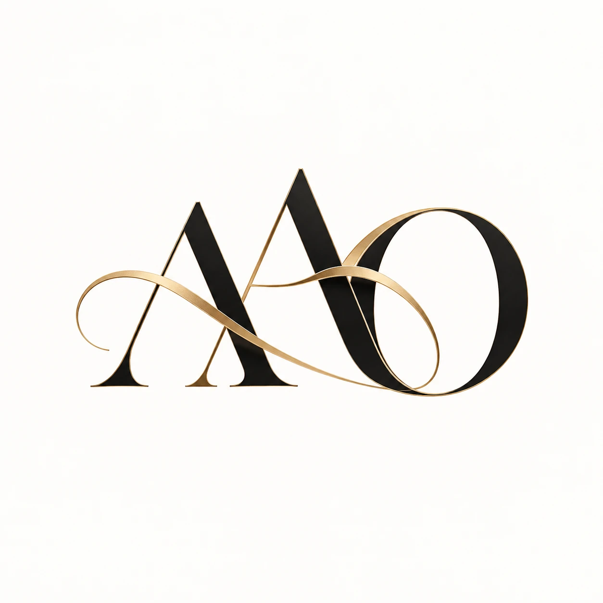

Programa de Acompanhamento Nutricional Premium
Programa de acompanhamento nutricional estratégico e personalizado para mulheres 35+ que desejam cuidar da composição corporal, saúde, energia e qualidade de vida com uma estratégia compatível com a própria rotina.
Para quem é o programa
Você administra trabalho, empresa, equipe, família, compromissos e decisões todos os dias. Mas talvez tenha percebido que, depois dos 35, seu corpo e sua energia já não respondem da mesma forma — enquanto sua rotina deixa cada vez menos espaço para cuidar de você.
Rotina intensa e pouco tempo para organizar a própria alimentação
Dificuldade em manter constância
Sensação de metabolismo diferente
Mudanças relacionadas à fase hormonal
Dificuldade em preservar massa muscular
Menor firmeza corporal
Falta de energia
Diversas tentativas anteriores sem conseguir manter os resultados
Dificuldade de conciliar saúde, trabalho e vida pessoal
O Emagrecimento Blindado foi criado especialmente para mulheres que precisam de uma estratégia compatível com uma vida real, exigente e dinâmica.
O diferencial
Não existe um protocolo único para todas as mulheres. Cada acompanhamento começa pela compreensão da história, rotina, objetivos, fase de vida e resposta individual da cliente.
O programa não foi criado para atender todas as pessoas. Foi desenvolvido para mulheres 35+ que procuram um acompanhamento próximo, individualizado e estratégico.
Como funciona o método
Diagnóstico
→
Estratégia personalizada
→
Ajustes metabólicos e nutricionais
→
Acompanhamento
→
Consolidação
→
Manutenção
Diferentes estratégias e protocolos podem ser utilizados conforme a avaliação e a evolução individual de cada cliente.
Situações especiais
Essa decisão é médica.
O acompanhamento nutricional pode ser adaptado para auxiliar em alimentação, ingestão proteica, preservação de massa muscular, rotina, composição corporal e manutenção dos resultados.
O que você recebe
01
Entendimento do seu momento, histórico, rotina, objetivos, dificuldades e necessidades individuais.
02
Construção de uma estratégia nutricional baseada na sua realidade, fase de vida, composição corporal e objetivos. Nada de protocolo genérico.
03
Monitoramento da evolução, suporte, ajustes de estratégia e adaptação conforme a resposta do organismo e a rotina da cliente.
Orientação alimentar prática
Estratégias para viagens e compromissos sociais
Suporte próximo
Ferramentas práticas para a rotina
Orientação para manutenção
Ajustes contínuos ao longo do processo
Quem conduz o seu acompanhamento
Nutricionista clínica · Atuação desde 2003
CRN3 15233
Mais de duas décadas de experiência clínica aplicadas a uma metodologia desenvolvida especialmente para os desafios da mulher depois dos 35 anos. Especialista em emagrecimento feminino, com atuação em nutrição esportiva, obesidade, emagrecimento e fitoterapia. O acompanhamento combina experiência clínica, estratégia nutricional e um olhar individual para cada fase, objetivo e rotina.
Não existe uma estratégia única para todas as mulheres. O acompanhamento precisa respeitar a fase, a rotina, os objetivos e a resposta individual de cada uma.
Próximo passo
Nossa equipe pode organizar uma conversa com Andréa para entender o seu momento, seus objetivos e avaliar se o Emagrecimento Blindado é adequado para você.
QUERO CONVERSAR COM A ANDRÉA
Emagrecimento Blindado
Andréa Oliveira · Nutricionista